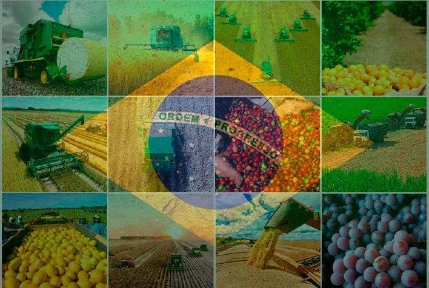

Isto irá prejudicar a produção de alimento no mundo, uma vez que não teremos alimentos suficiente para alimentar a humanidade, por isso temos que investir em tecnologias para ampliar a produção de alimentos que irão atender a demanda mundial; ou seja, deve-se buscar muitos estudos que irão contribuir na descoberta de formas para melhorar o processo de produção partindo desde o plantio das sementes. Até pou pouco tempo, os agricultores confiavam muito somente em tecnológias consolidadas e extensivamente estudadas, ajustadas sobre os padrões climáticos da época do ano.
Tem como continuar trabalhando a agricultura sem a ajuda de estudos das inovações que vem surgindo no decorrer dos anos. Pois a finalidade de tudo isso é para evitar que no futuro as novas gerações venham a sofrer pela escassez de alimentos.
